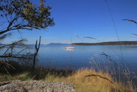

Canada - 1/7/2013 au 26/7/2013
Quel bonheur, la Colombie Britannique. Le nord sauvage est magnifique, les fjords qui s'enfoncent sans tumulte dans les montagnes aux sommets enneigés, le soleil rasant qui éclaire le jour d'une lumière diaphane, les saumons qui virevoltent autour du bateau, les orques qui vous snobent en passant à 3m de vos étraves et l'absence quasi totale de pluie...
Après 4 ans de tropiques, le grand nord aura été comme une bouffée d'oxygène dans notre grand voyage. L'immensité presque vierge des territoires a quelque chose de sublime, au sens romantique du terme. Les randos que l'on peut faire dans les forêts de cèdres sont également à classer parmi les points forts de ce petit coin de paradis.
Les Canadiens nous ont paru beaucoup plus relax que leurs voisins américains. Vancouver nous a également séduits, tant par son urbanisme organique que par sa gastronomie presque européenne.
D'un point de vue voilistique, on regrettera la molesse du vent et la présence d'un nombre invraisemblable d'engins motorisés à l'approche de Vancouver. En contrepartie, nous n'avons jamais aussi bien dormi au mouillage depuis notre départ...
On garde: Le calme majestueux des fjords.
On scratche: La fraîcheur matinale et humide dans les cabines.

